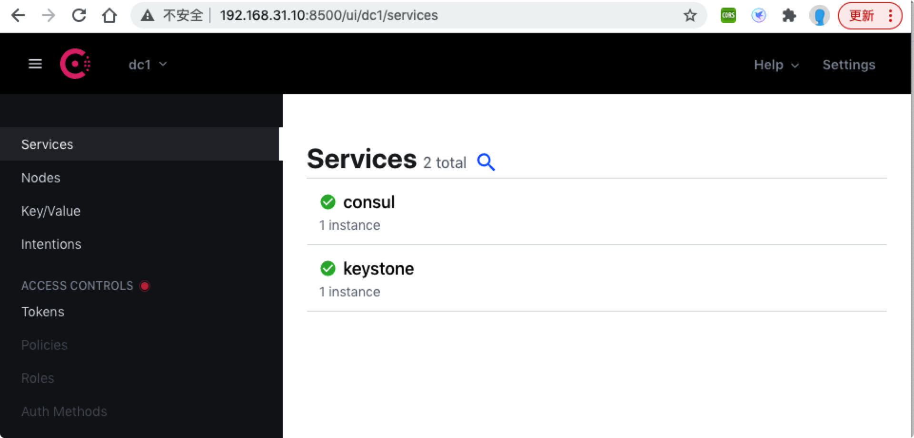
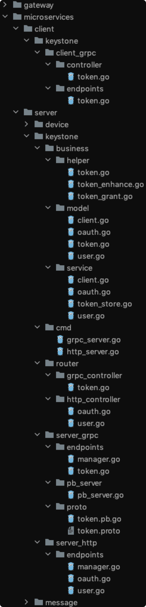

基于Go-kit 框架定制微服务应用的开发流程

目录
本文总结了基于go-kit定制微服务框架的基本方法和开发流程。
- http 微服务只需要实现 server 端封装逻辑即可
- Grpc 微服务需要同时实现 client/server 两端的封装逻辑
- 两种微服务均采用标准化的参数传输方法，即封装为单一的 json 数据 payload
- 注意 context 参数的使用，一般用于会产生延时的 service 接口，作为第一个参数传入，并在 main 中创建根context对象
- 本文的撰写顺序是针对开发顺序，实际的执行顺序一般与开发顺序是相反的，可以参考 main 中的执行顺序
- 一个微服务一般包含独立的database，针对该database实现独立的业务，尽量保持与其他微服务的解耦
微服务基本框架
定制 HTTP 微服务应用
项目结构
项目结构说明
| 文件夹 | 子文件夹 | 作用 | 备注 |
|---|---|---|---|
| cmd | 启动程序 | Main | |
| server | 服务端实现 | ||
| app | 定义服务端应用接口 | ||
| transports | 实现http传输层处理 | ||
| endpoints | 实现http服务端口封装 | ||
| services | 实现单一服务 | ||
| helpers | 实现组合服务 | ||
| client | 客户端访问方法 | http为单向连接，一般通过web-browser进行访问 |
application
1.1）定义应用接口（Application）
type I_http_application interface {
Make_route(string, endpoint.Endpoint)
Get_db() *mongo.Database
Get_router() *iris.Application
Get_logger() *log.Logger
Decode_request(ctx context.Context, request *http.Request) (interface{}, error)
Encode_response(ctx context.Context, w http.ResponseWriter, response interface{}) error
Encode_error(ctx context.Context, err error, w http.ResponseWriter)
}
1.2）定义Payload数据结构，对于http来说，就是body中的内容结构
type Http_payload_request struct {
Params iris.Map `json:"params`
}
type Http_payload_response struct {
Result results.Result `json:"result"`
}
transport
2.1）定义实现 application 接口的transport层对象
type Transport_for_http_application struct {
db *mongo.Database
logger log.Logger
router *iris.Application
server_options []go_kit_http.ServerOption
}
2.2）实现 application 入口
func Make_http_application(router *iris.Application, db *mongo.Database, logger log.Logger) {
tps := &Transport_for_http_application{router: router, db: db, logger: logger}
client_service := services.New_default_client_service(db)
client_authorization_options := []go_kit_http.ServerOption{
go_kit_http.ServerBefore(make_client_context(client_service, logger)),
go_kit_http.ServerErrorHandler(transport.NewLogErrorHandler(logger)),
go_kit_http.ServerErrorEncoder(tps.Encode_error),
}
tps.server_options = client_authorization_options
endpoints.Init_iris_controllers(tps)
}
endpoint
3.1）定义 endpoint 的控制器 controller
type Token_controller struct {
transport_server app.I_http_application
endpoints map[string]endpoint.Endpoint
handler_client services.I_client_service
helper_token_enhance helpers.I_token_enhance
helper_token helpers.I_token_service_helper
helper_token_granters helpers.I_token_grant_helper
}
3.2）定义 controller 构造方法
func New_token_controller(tps app.I_http_application) {
ctl := &Token_controller{transport_server: tps}
ctl.handler_client = services.New_default_client_service(tps.Get_db())
ctl.helper_token_enhance = helpers.New_jwt_token_enhancer(tps.Get_db(), "jwt_secret")
ctl.helper_token = helpers.New_default_token_service(tps.Get_db(), ctl.helper_token_enhance)
token_granter_with_user_and_password := helpers.New_token_granter_with_username_and_password(tps.Get_db(), ctl.helper_token)
ctl.helper_token_granters = helpers.New_token_granters(map[string]helpers.I_token_grant_helper{
"password": token_granter_with_user_and_password,
})
ctl.endpoints = make(map[string]endpoint.Endpoint, 0)
ctl.register_endpoint_router()
}
3.3）添加endpoint的路由
func (ctl *Token_controller) register_endpoint_router() {
tps := ctl.transport_server
ctl.endpoints["grant_token"] = Make_client_authorization_middleware()(ctl.grant_token())
tps.Make_route("/oauth/token", ctl.endpoints["grant_token"])
}
3.4）定义 endpoint
func (ctl *Token_controller) grant_token() endpoint.Endpoint {
return func(ctx context.Context, request interface{}) (response interface{}, err error) {
data := results.API()
grant_type := ""
rq := request.(app.Http_payload_request)
if value, ok := rq.Params["grant_type"]; ok {
grant_type = value.(string)
} else {
rs := results.Error(data, Err_lost_parameters_with_request.Error())
return app.Http_payload_response{Result: *rs}, nil
}
client := ctx.Value(app.OAUTH2_authorization_client_key).(model.Client)
rs := ctl.helper_token_granters.Grant(ctx, grant_type, client.Client_uuid, rq.Params)
return app.Http_payload_response{Result: *rs}, nil
}
}
3.5）创建并初始化 controller
func Init_iris_controllers(tps app.I_http_application) {
New_token_controller(tps)
}
service
服务分为两种类型：
- 单一服务接口
- 组合服务接口
两种类型接口的实现方式类似，其中组合服务接口可以基于单一服务接口进行组合封装
4.1）定义服务接口和对象 service
type I_user_service interface {
New_user(ctx context.Context, user_name, password string) *results.Result
Get_user_by_uuid(ctx context.Context, user_uuid string) *results.Result
Check_user_by_name_and_password(ctx context.Context, user_name, password string) *results.Result
}
type User_service struct {
db *mongo.Database
collection *mongo.Collection
}
4.2）定义 service 的构造方法
func New_default_user_service(db *mongo.Database) *User_service {
service := User_service{}
service.db = db
service.collection = db.Collection("users")
return &service
}
4.3）实现service 接口
func (s *User_service) New_user(ctx context.Context, user_name, password string) *results.Result {
data := results.API()
a_user := model.User{
User_uuid: primitive.NewObjectID().Hex(),
User_name: user_name,
Password: password,
}
_, err := s.collection.InsertOne(ctx, a_user)
if err != nil {
return results.Error(data, Err_failed_to_insert.Error())
}
current := s.get_user(ctx, a_user.User_uuid)
data["user"] = current["user"]
return results.Ok(data)
}
cmd/server
5）实现服务的启动
func main() {
err_chan := make(chan error)
config.Init_config()
db.Init_mongo_db()
ctx := context.Background()
database := db.Get_mongo_db()
web_app := iris.New()
logger := go_kit_log.NewLogfmtLogger(os.Stderr)
logger = go_kit_log.With(logger, "ts", go_kit_log.DefaultTimestampUTC)
logger = go_kit_log.With(logger, "caller", go_kit_log.DefaultCaller)
init_data(ctx, database, logger)
transports.Make_http_application(ctx, web_app, database, logger)
go func() {
log.Println("Http server start at port: 5000")
err_chan <- web_app.Run(iris.Addr(":5000"))
}()
go func() {
c := make(chan os.Signal, 1)
signal.Notify(c, syscall.SIGINT, syscall.SIGTERM)
err_chan <- fmt.Errorf("%s", <-c)
}()
err := <-err_chan
log.Println(err)
}
测试运行
- 启动server
cd cmd
go run server.go
- postman 调用

定制 gRPC 微服务应用
项目结构
项目结构说明
| 文件夹 | 子文件夹 | 作用 | 备注 |
|---|---|---|---|
| cmd | 启动客户端与服务端主程序 | server.go, client.go | |
| pb | 定义grpc服务的proto和自动生成的pb.go | proto需要编写，并通过protoc编译自动生成对应的pb.go | |
| server | 服务端实现 | grpc是双向连接，需要分别定义client和server的go-kit封装逻辑 | |
| app | 定义服务端应用接口 | ||
| transports | 实现grpc传输层处理 | ||
| Endpoints | 实现grpc服务端口封装 | ||
| Services | 实现单一服务 | ||
| Helpers | 实现组合服务 | ||
| client | 客户端实现 | grpc是双向连接，需要分别定义client和server的go-kit封装逻辑 |
pb
0）定义 grpc服务
syntax = "proto3";
option go_package="/pb";
service StringService {
rpc Concat(JsonRequest) returns (JsonResponse) {}
rpc Diff(JsonRequest) returns (JsonResponse) {}
}
message JsonRequest {
bytes Params = 1;
}
message JsonResponse {
bytes Result = 1;
}
生成go 文件
sudo go get github.com/golang/protobuf/protoc-gen-go@v1.3.2
cd pb
cd ../
protoc -I pb --go_out=plugins=grpc:. pb/string.proto
## 输出 string.pb.go
server/application
1.1）定义应用接口（Application）
type I_grpc_application interface {
Make_route(string, endpoint.Endpoint)
Get_db() *mongo.Database
Get_router() *Router
Get_logger() *log.Logger
// gRPC payload 转码
Decode_request(ctx context.Context, r interface{}) (request interface{}, err error)
Encode_response(ctx context.Context, w interface{}) (response interface{}, err error)
}
1.2）定义应用路由（Router），模拟iris.application的router
type Router struct {
Table map[string]grpc.Handler
}
1.3）定义Payload数据结构，对于gRPC来说，我们将rpc方法的参数进行标准化，将其与http的payload保持一致，采用json封装
type Grpc_payload_request struct {
Method string `json:"method"` // 全部小写
Params iris.Map `json:"params"`
}
type Grpc_payload_response struct {
Result results.Result `json:"result"`
}
server/transport
2.1）定义实现application 接口的transport层对象
type Transport_for_grpc_application struct {
db *mongo.Database
logger log.Logger
router *app.Router
server_options []grpc.ServerOption
}
2.2）实现application 入口
func Make_grpc_application(db *mongo.Database, logger log.Logger) *Transport_for_grpc_application {
router := app.Router{
Table: make(map[string]grpc.Handler, 0),
}
return &Transport_for_grpc_application{
db: db,
logger: logger,
router: &router,
}
}
2.3）定义路由控制器
type String_service_router struct {
transport_server app.I_grpc_application
concat grpc.Handler
diff grpc.Handler
}
2.4）创建路由器
func New_string_service_router(tps app.I_grpc_application) *String_service_router {
router := String_service_router{transport_server: tps}
return &router
}
2.5）初始化路由器
func (s *String_service_router) Init_router() {
router_table := s.transport_server.Get_router().Table
for method, handler := range router_table {
switch method {
case "concat":
s.concat = handler
case "diff":
s.diff = handler
}
}
}
server/endpoint
3.1）定义 endpoint 的控制器 controller
type String_controller struct {
transport_server app.I_grpc_application
endpoints map[string]endpoint.Endpoint
handler_string services.I_string_service
}
3.2）定义 controller 构造方法
func New_string_controller(tps app.I_grpc_application) {
ctl := &String_controller{transport_server: tps}
ctl.handler_string = services.New_default_string_service(tps.Get_db())
ctl.endpoints = make(map[string]endpoint.Endpoint, 0)
ctl.register_endpoint_router()
}
3.3）添加 endpoint 路由
func (ctl *String_controller) register_endpoint_router() {
ctl.register_endpoint("concat", ctl.concat())
}
func (ctl *String_controller) register_endpoint(name string, endpoint endpoint.Endpoint) {
tps := ctl.transport_server
ctl.endpoints[name] = endpoint
tps.Make_route(name, ctl.endpoints[name])
}
3.4）定义 endpoint
func (ctl *String_controller) concat() endpoint.Endpoint {
return func(ctx context.Context, request interface{}) (response interface{}, err error) {
data := results.API()
rq := request.(*app.Grpc_payload_request)
//pp.Println("string_controller.concat", rq)
err = rq.Check_request("concat", "a", "b")
if err != nil {
rs := results.Error(data, err.Error())
return app.Grpc_payload_response{Result: *rs}, nil
}
a := rq.Params["a"].(string)
b := rq.Params["b"].(string)
rs := ctl.handler_string.Concat(ctx, a, b)
return app.Grpc_payload_response{Result: *rs}, nil
}
}
3.5）创建并初始化 controller
func Init_json_controllers(tps app.I_grpc_application) {
New_string_controller(tps)
}
server/service
服务也分为两种类型
4.1）定义服务接口和对象 service
type I_string_service interface {
Concat(ctx context.Context, a, b string) *results.Result
Diff(ctx context.Context, a, b string) *results.Result
}
type String_service struct {
db *mongo.Database
collection *mongo.Collection
}
4.2）定义 service 的构造方法
func New_default_string_service(db *mongo.Database) *String_service {
service := String_service{}
service.db = db
return &service
}
4.3）实现 service 接口
func (s *String_service) Concat(ctx context.Context, a, b string) *results.Result {
//pp.Println("string_service.concat", a, b)
data := results.API()
data["ret"] = a + b
return results.Ok(data)
}
cmd/server
5）实现服务的启动
func main() {
err_chan := make(chan error)
config.Init_config()
db.Init_mongo_db()
database := db.Get_mongo_db()
logger := go_kit_log.NewLogfmtLogger(os.Stderr)
logger = go_kit_log.With(logger, "ts", go_kit_log.DefaultTimestampUTC)
logger = go_kit_log.With(logger, "caller", go_kit_log.DefaultCaller)
tps := transports.Make_grpc_application(database, logger)
endpoints.Init_json_controllers(tps)
router := transports.New_string_service_router(tps)
router.Init_router()
go func() {
log.Println("gRPC server start at port: 5001")
ls, _ := net.Listen("tcp", ":5001")
gRPCServer := grpc.NewServer()
pb.RegisterStringServiceServer(gRPCServer, router)
err_chan <- gRPCServer.Serve(ls)
}()
go func() {
c := make(chan os.Signal, 1)
signal.Notify(c, syscall.SIGINT, syscall.SIGTERM)
err_chan <- fmt.Errorf("%s", <-c)
}()
err := <-err_chan
log.Println(err)
}
client/transport
1.1）定义客户端接口（Client）
type I_grpc_client interface {
Make_endpoint(method string) endpoint.Endpoint
// gRPC payload 转码
Encode_request(ctx context.Context, w interface{}) (request interface{}, err error)
Decode_response(ctx context.Context, r interface{}) (response interface{}, err error)
}
1.2）实现客户端接口
type Transport_for_grpc_client struct {
service_name string
conn *grpc.ClientConn
}
1.3）实现客户端入口
func Make_grpc_client(service_name string, conn *grpc.ClientConn) *Transport_for_grpc_client {
tps := &Transport_for_grpc_client{
conn: conn,
service_name: service_name,
}
return tps
}
client/endpoint
2.1）定义 endpoint 控制器
type I_string_service_client_endpoints interface {
Concat(ctx context.Context, a, b string) *results.Result
}
type String_service_client_endpoints struct {
transport_client I_grpc_client
endpoints map[string]endpoint.Endpoint
}
2.2）定义 endpoint 控制器构造方法
func New_string_service_client_endpoints(tps I_grpc_client) I_string_service_client_endpoints {
endpoints := make(map[string]endpoint.Endpoint, 0)
clt := &String_service_client_endpoints{
transport_client: tps,
endpoints: endpoints,
}
clt.register_endpoint("Concat")
return clt
}
2.3）添加需要访问的endpoint
func (c *String_service_client_endpoints) register_endpoint(method string) {
tps := c.transport_client
edp := tps.Make_endpoint(method)
c.endpoints[method] = edp
}
func (c *String_service_client_endpoints) do_endpoint(ctx context.Context, method string, params iris.Map) *json_response {
method_name := strings.ToLower(method)
request := json_request{
Method: method_name,
Params: params,
}
edp := c.endpoints[method]
rs, _ := edp(ctx, &request)
return rs.(*json_response)
}
2.4）定义需要访问的 endpoint
func (c *String_service_client_endpoints) Concat(ctx context.Context, a, b string) *results.Result {
data := results.API()
params := iris.Map{
"a": a,
"b": b,
}
rs := c.do_endpoint(ctx, "Concat", params)
if rs.Success == false {
return results.Error(data)
}
ret := rs.Response.Data["ret"].(string)
data["ret"] = ret
return results.Ok(data)
}
cmd/client
3）实现客户端的启动
func main() {
ctx := context.Background()
conn, err := grpc.Dial(":5001", grpc.WithInsecure())
if err != nil {
fmt.Println("gRPC dial err:", err)
}
defer conn.Close()
tps := client.Make_grpc_client("StringService", conn)
rpc := client.New_string_service_client_endpoints(tps)
rs := rpc.Concat(ctx, "AAAA", "BBBB")
if rs.Success == true {
fmt.Println("ret: ", rs.Data["ret"])
}
}
测试
启动服务端
cd cmd
go run server.go
# 输出如下内容
2021/07/04 22:05:55 path: mongodb://192.168.31.10:27017
2021/07/04 22:05:55 Mongodb connection is ok.
2021/07/04 22:05:55 gRPC server start at port: 5001
启动客户端
cd cmd
go run client.go
# 输出如下内容
ret: AAAABBBB
HTTP微服务支持服务注册
基本思路
- 每个微服务都需要支持向“服务注册中心”进行服务注册的能力
- 采用go-kit提供的consul包进行实现，作为所有微服务应用的公共模块
- 本节以“定制http微服务应用”为基础，为其添加服务注册功能
cd common
mkdir discovery
cd discovery
echo "" >> client.go
echo "" >> service.go
echo "" >> endpoint.go
echo "" >> transport.go
client
参考《Go Kit 官方示例学习及其 API Gateway 实现》中的“服务注册与发现”一节进行实现
定义 discovery_client 接口
type I_discovery_client interface {
Register(service_name, instance_id, health_check_url string, host string, port string, meta map[string]string, logger *go_kit_log.Logger) bool
Deregister(instance_id string, logger *go_kit_log.Logger) bool
Discover_services(service_name string, logger *go_kit_log.Logger) []interface{}
}
transport
定义服务注册应用接口
type I_http_discovery interface {
Make_route(route_name string, endpoint endpoint.Endpoint, decode_request_func go_kit_http.DecodeRequestFunc)
Get_discovery_client() I_discovery_client
Get_router() *iris.Application
Get_logger() *log.Logger
Encode_response(ctx context.Context, w http.ResponseWriter, response interface{}) error
Encode_error(ctx context.Context, err error, w http.ResponseWriter)
}
定义服务注册应用对象
type Transport_for_http_discovery struct {
discovery_client I_discovery_client
logger log.Logger
router *iris.Application
server_options []go_kit_http.ServerOption
}
创建服务注册对象
func Make_http_discovery(router *iris.Application, discovery_client I_discovery_client, logger log.Logger) {
tps := &Transport_for_http_discovery{router: router, discovery_client: discovery_client, logger: logger}
server_options := []go_kit_http.ServerOption{
go_kit_http.ServerErrorHandler(transport.NewLogErrorHandler(logger)),
go_kit_http.ServerErrorEncoder(tps.Encode_error),
}
tps.server_options = server_options
New_http_discovery_controller(tps)
}
说明
- 服务注册对象会与consul等第三方注册中心交互，不能采用统一的"json"数据接口，需要定制参数解析方法（decode_request）
- 服务注册对象向第三方注册中心提供的回调接口，不能采用统一的POST方法，需要定制路由注册方法 （make_route）
func (t *Transport_for_http_discovery) Make_route(route_name string, endpoint endpoint.Endpoint, decode_request_func go_kit_http.DecodeRequestFunc) {
t.router.Get("/"+route_name, iris.FromStd(
go_kit_http.NewServer(
endpoint,
decode_request_func,
t.Encode_response,
t.server_options...,
)))
}
endpoint
定义服务注册端点（endpoint）
针对consul，主要支持两个端点（discovery，health_check）
type Http_discovery_controller struct {
transport_server I_http_discovery
discovery_client I_discovery_client
Discovery_endpoint endpoint.Endpoint
Health_check_endpoint endpoint.Endpoint
handler_discovery I_http_discovery_service
}
创建服务注册控制器
func New_http_discovery_controller(tps I_http_discovery) {
ctl := &Http_discovery_controller{
transport_server: tps,
discovery_client: tps.Get_discovery_client()}
ctl.handler_discovery = New_discovery_service(tps)
ctl.Discovery_endpoint = ctl.Make_discovery_endpoint()
ctl.Health_check_endpoint = ctl.Make_health_check_endpoint()
ctl.register_endpoint_router()
}
注册路由
func (ctl *Http_discovery_controller) register_endpoint_router() {
tps := ctl.transport_server
tps.Make_route("discovery", ctl.Discovery_endpoint, decode_discovery_request)
tps.Make_route("health", ctl.Health_check_endpoint, decode_health_check_request)
}
说明：需要分别针对（discovery，health_check）进行 endpoint 封装
service
定义服务注册接口对象
type I_http_discovery_service interface {
Health_check() bool
Discovery_service(ctx context.Context, service_name string) ([]interface{}, error)
}
type Http_discovery_service struct {
transport_server I_http_discovery
discovery_client I_discovery_client
}
创建服务注册接口对象
func New_discovery_service(tps I_http_discovery) I_http_discovery_service {
return &Http_discovery_service{
transport_server: tps,
discovery_client: tps.Get_discovery_client(),
}
}
实现回调接口
func (s *Http_discovery_service) Discovery_service(_ context.Context, service_name string) ([]interface{}, error) {
instances := s.discovery_client.Discover_services(service_name, s.transport_server.Get_logger())
if instances == nil || len(instances) == 0 {
return nil, Err_service_instance_does_not_exist
}
return instances, nil
}
func (s *Http_discovery_service) Health_check() bool {
return true
}
测试
启动服务
cd cmd
go run server.go
# 输出如下：
021/07/17 11:42:53 path: mongodb://192.168.31.10:27017
2021/07/17 11:42:53 Mongodb connection is ok.
2021/07/17 11:42:53 Http server start at 192.168.31.156:5000
2021/07/17 11:42:53 Register service success!
Now listening on: http://192.168.31.156:5000
查看注册中心

定制微服务HTTP网关
微服务网关
- 网关位于接入层和服务层之间，封装了系统内部架构，对每个客户端提供定制的API，用来保护、增强和控制对微服务的访问。
- API网关的最基本功能是对请求的路由转发，根据客户端HTTP请求，动态查询注册中心的服务实例，通过反向代理实现对后台服务的调用。
常见 API 网关
定制网关的方法
基于 gokit实现网关有三种方法
- 面向endpoint的独立网关(proxy模式)
- 可以对每个API提供细粒度的代理
- 仅仅支持http
- 不支持httputil.reverseproxy
- 面向service的独立网关(reverseproxy模式)
- 可以service为单位进行代理
- 可同时支持http和websocket
- 仅仅支持httputil.reverseproxy
- 双网关（gateway模式）
- 针对http和websocket分别提供独立的入口地址
Proxy 网关
定义服务发现管理器
type Service_instance_manager struct {
client consul.Client
instance_map map[string]*consul.Instancer
}
创建服务发现管理器
func New_service_instance_manager() *Service_instance_manager {
cfg := config.Get_config()
consul_config := api.DefaultConfig()
consul_config.Address = cfg.Consul.Host + ":" + cfg.Consul.Port
consul_client, err := api.NewClient(consul_config)
if err != nil {
tools.Log(err)
return nil
}
client := consul.NewClient(consul_client)
return &Service_instance_manager{
client: client,
instance_map: make(map[string]*consul.Instancer, 0),
}
}
实现服务发现接口
func (s *Service_instance_manager) Register_instance(service_name string) *consul.Instancer {
instance, ok := s.instance_map[service_name]
if ok {
return instance
}
instance = consul.NewInstancer(
s.client, tools.Get_gokit_logger(), service_name, []string{}, true)
s.instance_map[service_name] = instance
return instance
}
定义API端口管理器（一个gateway仅需要实现一个即可）
type Service_endpoint_manager struct {
instance_manager *Service_instance_manager
endpoint_map map[string]*endpoint_handler // service@endpoint : handler
}
type endpoint_handler struct {
transport_type string
service_name string
path string
method string
endpoint endpoint.Endpoint
handler *httptransport.Server
}
实现API端口发现和代理接口
func (s *Service_endpoint_manager) Register_http_endpoint(service_name string, path string, method string) error {
an_endpoint_handler := &endpoint_handler{
transport_type: "http",
service_name: service_name,
path: path,
method: method,
}
the_instancer := s.instance_manager.Get_instance(service_name)
if the_instancer == nil {
return Err_service_does_not_exist
}
the_endpointer := sd.NewEndpointer(
the_instancer, http_service_factory_builder(path, method), tools.Get_gokit_logger())
the_endpoint := lb.Retry(3, 3*time.Second, lb.NewRoundRobin(the_endpointer))
an_endpoint_handler.endpoint = the_endpoint
the_handler := httptransport.NewServer(
the_endpoint,
decode_http_request_FuncBuilder(Http_gateway_request{}),
encode_http_response,
)
an_endpoint_handler.handler = the_handler
s.endpoint_map[service_name+"@"+path] = an_endpoint_handler
return nil
}
实现API端口封装
func http_service_factory_builder(path string, method string) sd.Factory {
return func(instance string) (e endpoint.Endpoint, closer io.Closer, err error) {
http_prefix := "http://"
if !strings.HasPrefix(instance, http_prefix) {
instance = http_prefix + instance
}
//pp.Println("instance: ", instance)
tgt, err := url.Parse(instance)
if err != nil {
return nil, nil, err
}
tgt.Path = path
//pp.Println("tgt: ", tgt)
return httptransport.NewClient(
method, tgt,
encode_http_request, decode_http_response_FuncBuilder(Http_gateway_response{}),
).Endpoint(), nil, nil
}
}
针对每个微服务定义对应的代理对象（以keystone服务为例）
type Proxy_to_keystone struct {
router *iris.Application
service_name string
transport_type string
instance_manager *proxy.Service_instance_manager
endpoint_manager *proxy.Service_endpoint_manager
}
创建proxy对象，并注册API代理端口
func Init_route_to_keystone(router *iris.Application, instance_manager *proxy.Service_instance_manager, endpoint_manager *proxy.Service_endpoint_manager) {
an_proxy := Proxy_to_keystone{
service_name: proxy.SVC_keystone,
transport_type: "http",
router: router,
instance_manager: instance_manager,
endpoint_manager: endpoint_manager}
instance_manager.Register_instance(proxy.SVC_keystone)
_ = an_proxy.Make_route("POST", "oauth/token")
}
实现API代理端口
unc (p *Proxy_to_keystone) Make_route(method, path string) error {
edp := p.endpoint_manager
err := edp.Register_http_endpoint(p.service_name, path, method)
if err != nil {
return err
}
the_handler, _ := edp.Get_handler(p.service_name, path)
full_path := p.service_name + "/" + path
switch method {
case "GET":
p.router.Get(full_path, iris.FromStd(the_handler))
case "POST":
p.router.Post(full_path, iris.FromStd(the_handler))
}
return nil
}
实现proxy服务器
func main() {
config.Init_config()
cfg := config.Get_config()
web_app := iris.New()
instance_manager := proxy.New_service_instance_manager()
endpoint_manager := proxy.New_service_endpoint_manager(instance_manager)
microserver.Init_route_to_keystone(web_app, instance_manager, endpoint_manager)
tools.Log("Gateway server start at ", cfg.Gateway_proxy.Host+":"+cfg.Gateway_proxy.Port)
tools.Log("err", web_app.Run(iris.Addr(cfg.Gateway_proxy.Host+":"+cfg.Gateway_proxy.Port)))
}
说明：request的解析
type Http_gateway_request struct {
Authorization string
Params iris.Map `json:"params"`
}
type Http_gateway_response struct {
Result results.Result `json:"result"`
}
1）Proxy 的request解析
func decode_http_request_FuncBuilder(request Http_gateway_request) httptransport.DecodeRequestFunc {
return func(_ context.Context, r *http.Request) (_request interface{}, err error) {
if err := json.NewDecoder(r.Body).Decode(&request); err != nil {
return nil, err
}
request.Authorization = r.Header.Get("Authorization")
return request, nil
}
}
- API 端口的request 封装
func encode_http_request(_ context.Context, r *http.Request, request interface{}) error {
var buf bytes.Buffer
if err := json.NewEncoder(&buf).Encode(request.(Http_gateway_request)); err != nil {
return err
}
r.Body = ioutil.NopCloser(&buf)
r.Header.Set("Authorization", request.(Http_gateway_request).Authorization)
return nil
}
Reverse 网关
定义服务发现管理器
type Service_instance_reverse_manager struct {
api_client *api.Client
}
创建服务发现管理器
func New_service_instance_reverse_manager() *Service_instance_reverse_manager {
cfg := config.Get_config()
consul_config := api.DefaultConfig()
consul_config.Address = cfg.Consul.Host + ":" + cfg.Consul.Port
api_client, err := api.NewClient(consul_config)
if err != nil {
tools.Log(err)
return nil
}
return &Service_instance_reverse_manager{
api_client: api_client,
}
}
定义服务ReverseProxy管理器（一个gateway仅需要实现一个）
type Service_endpoint_reverse_manager struct {
instance_manager *Service_instance_reverse_manager
Reverse_proxy *httputil.ReverseProxy
}
实现服务反向代理
func (s *Service_endpoint_reverse_manager) Register_http_endpoint_reverse() error {
director := func(req *http.Request) {
req_path := req.URL.Path
if req_path == "" {
return
}
path_array := strings.Split(req_path, "/")
service_name := path_array[1]
result, _, err := s.instance_manager.api_client.Catalog().Service(service_name, "", nil)
if err != nil {
tools.Log(err)
return
}
if len(result) == 0 {
tools.Log("no such service instance: ", service_name)
return
}
dest_path := strings.Join(path_array[2:], "/")
tgt := result[rand.Int()%len(result)]
req.URL.Scheme = "http"
req.URL.Host = fmt.Sprintf("%s:%d", tgt.ServiceAddress, tgt.ServicePort)
req.URL.Path = "/" + dest_path
}
the_proxy := &httputil.ReverseProxy{Director: director}
s.Reverse_proxy = the_proxy
return nil
}
实现reverse_proxy服务器
func main() {
config.Init_config()
cfg := config.Get_config()
instance_manager := reverse.New_service_instance_reverse_manager()
endpoint_manager := reverse.New_service_endpoint_reverse_manager(instance_manager)
_ = endpoint_manager.Register_http_endpoint_reverse()
err_ch := make(chan error)
go func() {
c := make(chan os.Signal)
signal.Notify(c, syscall.SIGINT, syscall.SIGTERM)
err_ch <- fmt.Errorf("%s", <-c)
}()
go func() {
tools.Log("Gateway reverse proxy start at: " + cfg.Gateway_proxy_reverse.Host + ":" + cfg.Gateway_proxy_reverse.Port)
err_ch <- http.ListenAndServe(cfg.Gateway_proxy_reverse.Host+":"+cfg.Gateway_proxy_reverse.Port, endpoint_manager.Reverse_proxy)
}()
tools.Log("exit", <-err_ch)
}
Gateway 网关
实现Proxy网关和Reverse网关的综合，分别提供两个地址：
- Proxy：仅仅支持http
- Reverse：主要支持websocket
func main() {
config.Init_config()
cfg := config.Get_config()
web_app := iris.New()
reverse_instance_manager := reverse.New_service_instance_reverse_manager()
reverse_endpoint_manager := reverse.New_service_endpoint_reverse_manager(reverse_instance_manager)
_ = reverse_endpoint_manager.Register_http_endpoint_reverse()
proxy_instance_manager := proxy.New_service_instance_manager()
proxy_endpoint_manager := proxy.New_service_endpoint_manager(proxy_instance_manager)
microserver.Init_route_to_keystone(web_app, proxy_instance_manager, proxy_endpoint_manager)
microserver.Init_route_to_message(web_app, proxy_instance_manager, proxy_endpoint_manager)
err_ch := make(chan error)
go func() {
c := make(chan os.Signal)
signal.Notify(c, syscall.SIGINT, syscall.SIGTERM)
err_ch <- fmt.Errorf("%s", <-c)
}()
go func() {
tools.Log("Gateway http server start at " + cfg.Gateway_proxy.Host + ":" + cfg.Gateway_proxy.Port)
err_ch <- web_app.Run(iris.Addr(cfg.Gateway_proxy.Host + ":" + cfg.Gateway_proxy.Port))
}()
go func() {
tools.Log("Gateway websocket server start at " + cfg.Gateway_proxy_reverse.Host + ":" + cfg.Gateway_proxy_reverse.Port)
err_ch <- http.ListenAndServe(cfg.Gateway_proxy_reverse.Host+":"+cfg.Gateway_proxy_reverse.Port, reverse_endpoint_manager.Reverse_proxy)
}()
tools.Log("exit", <-err_ch)
}
定制 WS 微服务应用
说明：
- websocket 是一种特殊的 http 通信模式
- Ws 微服务以 http 微服务为基础进行扩展而成
application
定义 ws 应用接口
type I_ws_application interface {
Make_route(string, *io.Server)
Get_db() *mongo.Database
Get_router() *iris.Application
Get_ws_server() *io.Server
}
transport
定义ws 应用对象
type Transport_for_ws_application struct {
ws_server *io.Server
db *mongo.Database
router *iris.Application
}
创建应用对象
func Make_ws_application(router *iris.Application, db *mongo.Database) *Transport_for_ws_application {
tps := &Transport_for_ws_application{router: router, db: db}
Init_plugin()
gosf.Server_ready()
tps.ws_server = gosf.Get_io_server()
tps.Make_route("/connect", tps.ws_server)
return tps
}
注册ws端口路由
func (t *Transport_for_ws_application) Make_route(route_name string, server *io.Server) {
t.router.Get(route_name, iris.FromStd(server))
}
cmd/server
实现服务器
func main() {
config.Init_config()
cfg := config.Get_config()
discovery_client, err := discovery.New_kit_discovery_client(cfg.Consul.Host, cfg.Consul.Port)
if err != nil {
log.Println("Get consul client failed!")
os.Exit(-1)
}
err_chan := make(chan error)
db.Init_mongo_db()
ctx := context.Background()
database := db.Get_mongo_db()
web_app := iris.New()
init_data(ctx, database)
discovery.Make_http_discovery(web_app, discovery_client)
ws_transport.Make_ws_application(web_app, database)
instance_id := cfg.Message.Name + "-" + tools.NewUUID()
go func() {
tools.Log("Http server start at " + cfg.Message.Host + ":" + cfg.Message.Port)
if !discovery_client.Register(
cfg.Message.Name, instance_id, "/health",
cfg.Message.Host, cfg.Message.Port, nil) {
tools.Log("service: " + cfg.Message.Name + "failed.")
os.Exit(-1)
}
err_chan <- web_app.Run(iris.Addr(cfg.Message.Host + ":" + cfg.Message.Port))
}()
go func() {
c := make(chan os.Signal, 1)
signal.Notify(c, syscall.SIGINT, syscall.SIGTERM)
err_chan <- fmt.Errorf("%s", <-c)
}()
err = <-err_chan
log.Println(err)
}
测试
启动服务
go run server.go
# 输出如下
[CC-Table] 2021/07/19 18:42:29 path: mongodb://192.168.31.10:27017
[CC-Table] 2021/07/19 18:42:29 Mongodb connection is ok.
"Http server start at 192.168.31.156:6002",
"Register service success!",
Now listening on: http://192.168.31.156:6002
Application started. Press CMD+C to shut down.
启动网关
go run gateway.go
# 输出如下
ts=2021-07-19T10:45:02.196656Z caller=instancer.go:48 service=keystone tags=[] instances=0
ts=2021-07-19T10:45:02.231953Z caller=instancer.go:48 service=message tags=[] instances=1
"Gateway http server start at 127.0.0.1:5000",
"Gateway websocket server start at 127.0.0.1:5001",
Now listening on: http://127.0.0.1:5000
Application started. Press CMD+C to shut down.
测试（WS工具：http://www.easyswoole.com/wstool.html）
HTTP业务接口开发
以"register_user"为例
(1) model
type User struct {
User_uuid string `json:"user_uuid", bson:"user_uuid"`
User_name string `json:"user_name", bson:"user_name"`
Telephone string `json:"telephone", bson:"telephone"`
Password string `json:"password", bson:"password"`
Actors []string `json:"actors", bson:"actors"`
Create_at time.Time `json:"create_at",bson:"create_at"`
Is_login bool `json:"is_login",bson:"is_login"`
}
(2) service
func (s *User_service) New_user_with_telephone(ctx context.Context, user_name, telephone string) *results.Result {
data := results.API()
a_user := model.User{
User_uuid: primitive.NewObjectID().Hex(),
User_name: user_name,
Password: telephone,
Telephone: telephone,
Create_at: time.Now(),
Actors: tools.EmptyArrayString,
Is_login: false,
}
_, err := s.collection.InsertOne(ctx, a_user)
if err != nil {
return results.Error(data, results.Err_db_failed_to_insert.Error())
}
current := s.get_user(ctx, a_user.User_uuid)
data["user"] = current["user"]
return results.Ok(data)
}
(3) controller
func (ctl *User_controller) Register_user(ctx context.Context, client_uuid string, user_name, telephone, password string) *results.Result {
data := results.API()
rs := ctl.handler_user.Check_user_by_name_and_telephone(ctx, user_name, telephone)
if rs.Is_success() {
return results.Ok(data)
}
rs = ctl.handler_user.New_user_with_telephone(ctx, user_name, telephone)
if rs.Is_failure() {
return results.Error(data, rs.Msg)
}
the_user := rs.Data["user"].(model.User)
rs = ctl.handler_user.Update_user(ctx, the_user.User_uuid, "password", password)
if rs.Is_failure() {
return results.Error(data, rs.Msg)
}
the_user = rs.Data["user"].(model.User)
rs = ctl.handler_oauth.New_oauth(ctx, the_user.User_uuid, client_uuid)
if rs.Is_failure() {
return results.Error(data, rs.Msg)
}
data["user"] = the_user
return results.Ok(data)
}
(4) endpoints
func (m *User_manager) register_user() endpoint.Endpoint {
return func(ctx context.Context, request interface{}) (response interface{}, err error) {
data := results.API()
client_uuid, err := check_oauth_authorization(ctx, m.transport_server)
if err != nil {
rs := results.Error(data, err.Error())
return app.Http_payload_response{Result: *rs}, nil
}
user_name := ""
telephone := ""
password := ""
rq := request.(app.Http_payload_request)
if value, ok := rq.Params["user_name"]; ok {
user_name = value.(string)
} else {
rs := results.Error(data, results.Err_lost_parameters_with_request.Error())
return app.Http_payload_response{Result: *rs}, nil
}
if value, ok := rq.Params["telephone"]; ok {
telephone = value.(string)
} else {
rs := results.Error(data, results.Err_lost_parameters_with_request.Error())
return app.Http_payload_response{Result: *rs}, nil
}
if value, ok := rq.Params["password"]; ok {
password = value.(string)
} else {
rs := results.Error(data, results.Err_lost_parameters_with_request.Error())
return app.Http_payload_response{Result: *rs}, nil
}
rs := m.ctl_user.Register_user(ctx, client_uuid, user_name, telephone, password)
if rs.Is_failure() {
rs = results.Error(data, rs.Msg)
return app.Http_payload_response{Result: *rs}, nil
}
data["result"] = iris.Map{
"user": rs.Data["user"],
}
return app.Http_payload_response{Result: *results.Ok(data)}, nil
}
}
(5) api
const (
EDP_keystone__user__register_user = "/user/register_user"
)
(6) manager
func New_user_manager(tps app.I_http_application) {
m := &User_manager{transport_server: tps}
m.ctl_user = controller.New_user_controller(tps)
m.endpoints = make(map[string]endpoint.Endpoint, 0)
m.Register_endpoint(api.EDP_keystone__user__register_user, m.register_user())
}
(7) proxy.microserver（如果是reverse_proxy，则可以省略）
func Init_route_to_keystone(router *iris.Application, instance_manager
_ = an_proxy.Make_route("POST", api.EDP_keystone__user__register_user)
}
(8) postman 测试
- server
cd cmd
go run server.go
- proxy
cd cmd
go run reverse.go
- api
curl http://localhost:5001/keystone/user/register_user
- Request
// set authorization
Autorization: Basic NjBmZTliMzM0OGY5NmY1NDNlNGM1NTBkOmNjdGFibGUtd2ViLWNsaWVudC1zZWNyZXQ=
// body
{
"params": {
"user_name": "test_user_1",
"telephone": "12345678901",
"password": "12345678901"
}
}
- Response
{
"success": true,
"code": "server-api-ok",
"response": {
"Data": {
"api_expired": false,
"api_name": "cctable/microservices/keystone/server_http/endpoints.(*User_manager).register_user.func1()",
"result": {
"user": {
"user_uuid": "60fd4f2054f463ce2e5fe3e2",
"user_name": "test_user_1",
"telephone": "12345678901",
"password": "12345678901",
"actors": null,
"create_at": "2021-07-25T11:46:40.772Z"
}
}
},
"Msg": "ok"
},
"error": {}
}
GRPC微服务支持服务注册
基本思路
模仿http服务注册开发方法，并借助于google grpc health 协议进行开发
client
定义consul访问接口
type I_discovery_grpc_client interface {
Register(service_name, instance_id string, host string, port string) bool
Deregister(instance_id string) bool
Discover_services(service_name string) []interface{}
}
type Kit_discovery_grpc_client struct {
Host string
Port string
client *api.Client
agent *api.Agent
config *api.Config
mutex sync.Mutex
instances_map sync.Map
}
实现consul访问对象
func New_kit_discovery_grpc_client(host string, port string) (I_discovery_grpc_client, error) {
consul_config := api.DefaultConfig()
consul_config.Address = host + ":" + port
api_client, err := api.NewClient(consul_config)
if err != nil {
return nil, err
}
agent := api_client.Agent()
return &Kit_discovery_grpc_client{
Host: host,
Port: port,
config: consul_config,
client: api_client,
agent: agent,
}, nil
}
实现服务发现与注册接口（支持以tag区分同类服务的不同访问端口，例如http, grpc）
func (c *Kit_discovery_grpc_client) Register(service_name, instance_id, host, port string) bool {
int_port, _ := strconv.Atoi(port)
service_registration := &api.AgentServiceRegistration{
ID: instance_id,
Name: service_name,
Address: host,
Port: int_port,
Tags: []string{"grpc"},
Check: &api.AgentServiceCheck{
DeregisterCriticalServiceAfter: "30s",
GRPC: fmt.Sprintf("%v:%v/health", host, port),
Interval: "15s",
},
}
if err := c.agent.ServiceRegister(service_registration); err != nil {
tools.Log("Register service " + service_name + " error!")
return false
}
tools.Log("Register service " + service_name + " success!")
return true
}
func (c *Kit_discovery_grpc_client) Deregister(instance_id string) bool {
err := c.agent.ServiceDeregister(instance_id)
if err != nil {
tools.Log("Deregister service " + instance_id + " failed!")
return false
}
tools.Log("Deregister service " + instance_id + " success!")
return true
}
func (c *Kit_discovery_grpc_client) Discover_services(service_name string) []interface{} {
instance_list, ok := c.instances_map.Load(service_name)
if ok {
return instance_list.([]interface{})
}
c.mutex.Lock()
defer c.mutex.Unlock()
instance_list, ok = c.instances_map.Load(service_name)
if ok {
return instance_list.([]interface{})
}
go func() {
params := make(map[string]interface{})
params["type"] = "service"
params["service"] = service_name
plan, _ := watch.Parse(params)
plan.Handler = func(u uint64, i interface{}) {
if i == nil {
return
}
v, ok := i.([]*api.ServiceEntry)
if !ok {
return
}
if len(v) == 0 {
c.instances_map.Store(service_name, []interface{}{})
}
var health_services []interface{}
for _, service := range v {
if service.Checks.AggregatedStatus() == api.HealthPassing {
health_services = append(health_services, service.Service)
}
}
c.instances_map.Store(service_name, health_services)
}
defer plan.Stop()
_ = plan.Run(c.config.Address)
}()
entries, _, err := c.client.Health().Service(service_name, "grpc", false, nil)
if err != nil {
c.instances_map.Store(service_name, []interface{}{})
tools.Log("Discover service error!")
return nil
}
instances := make([]interface{}, len(entries))
for i := 0; i < len(instances); i++ {
instances[i] = entries[i].Service
}
c.instances_map.Store(service_name, instances)
return instances
}
service
实现 google.grpc.health 协议接口
type Gprc_discovery_service struct {
}
// --------------------------------------------------------------------
// 接口方法
// --------------------------------------------------------------------
func (s *Gprc_discovery_service) Check(ctx context.Context, req *grpc_health_v1.HealthCheckRequest) (*grpc_health_v1.HealthCheckResponse, error) {
return &grpc_health_v1.HealthCheckResponse{
Status: grpc_health_v1.HealthCheckResponse_SERVING,
}, nil
}
func (s *Gprc_discovery_service) Watch(req *grpc_health_v1.HealthCheckRequest, w grpc_health_v1.Health_WatchServer) error {
return nil
}
与 grpc server 绑定
Main()：注意 grpc_health_v1.RegisterHealthServer 的调用
instance_id := cfg.Keystone.Name + "-grpc-" + cfg.Keystone.ID
if !discovery_client.Register(cfg.Keystone.Name, instance_id, cfg.Keystone.Host, cfg.Keystone.Grpc_port) {
tools.Log("register grpc service: " + cfg.Keystone.Name + " failed.")
os.Exit(-1)
}
go func() {
tools.Log(cfg.Keystone.Name + " grpc server start at " + cfg.Keystone.Host + ":" + cfg.Keystone.Grpc_port)
ls, _ := net.Listen("tcp", cfg.Keystone.Host+":"+cfg.Keystone.Grpc_port)
gRPCServer := grpc.NewServer()
proto.RegisterTokenServiceServer(gRPCServer, router)
grpc_health_v1.RegisterHealthServer(gRPCServer, &discover_grpc.Gprc_discovery_service{})
err_chan <- gRPCServer.Serve(ls)
}()
err = <-err_chan
discovery_client.Deregister(instance_id)
GRPC 客户端开发
公共部分
transports（公共）
定义 Grpc 客户端应用
type I_grpc_client interface {
Make_endpoint(service_name, method string) endpoint.Endpoint
// gRPC payload 转码
Encode_request(ctx context.Context, w interface{}) (request interface{}, err error)
Decode_response(ctx context.Context, r interface{}) (response interface{}, err error)
}
type Transport_for_grpc_client struct {
conn *grpc.ClientConn
}
创建 Grpc 客户端
func Make_grpc_client(conn *grpc.ClientConn) *Transport_for_grpc_client {
tps := &Transport_for_grpc_client{
conn: conn,
}
return tps
}
实现端点注册、请求响应编解码()
func (t *Transport_for_grpc_client) Make_endpoint(service_name, method string) endpoint.Endpoint {
client := go_kit_grpc.NewClient(
t.conn,
service_name,
method,
t.Encode_request,
t.Decode_response,
pb.JsonResponse{},
)
return client.Endpoint()
}
func (t *Transport_for_grpc_client) Encode_request(ctx context.Context, w interface{}) (request interface{}, err error) {
//pp.Println("encode_request: ", w)
rq := w.(*Json_rpc_request)
//tools.Log(rq)
if rq.Method == "" {
return nil, results.Err_invalid_method_with_rpc_request
}
byte_request, _ := json.Marshal(rq)
return &pb.JsonRequest{Params: byte_request}, nil
}
func (t *Transport_for_grpc_client) Decode_response(ctx context.Context, r interface{}) (response interface{}, err error) {
//pp.Println("decode_response: ", r)
req := r.(*pb.JsonResponse)
//tools.Log(req)
var api_result Json_rpc_response
err = json.Unmarshal(req.Result, &api_result)
if err != nil {
return nil, err
}
//pp.Println(api_result)
return &api_result, nil
}
pb（公共）
Grpc client/server 采用统一的 request、response结构，需要定义 pb（payload.proto）
syntax = "proto3";
option go_package="/pb";
message JsonRequest {
bytes Params = 1;
}
message JsonResponse {
bytes Result = 1;
}
endpoints（公共）
定义客户端端点管理器
type I_grpc_endpoint_client_manager interface {
Register_grpc_endpoint(service_name, api_name, method string)
Call_grpc_endpoint(ctx context.Context, service_name, method string, params iris.Map) *Json_rpc_response
}
type Grpc_endpoint_client_manager struct {
transport_client I_grpc_client
endpoints map[string]endpoint.Endpoint
}
实现客户端端点管理器对象
func Make_grpc_endpoint_client_manager(tps I_grpc_client) *Grpc_endpoint_client_manager {
endpoints := make(map[string]endpoint.Endpoint, 0)
m := &Grpc_endpoint_client_manager{
transport_client: tps,
endpoints: endpoints,
}
return m
}
实现 grpc客户端的端点注册和rpc方法调用器
func (c *Grpc_endpoint_client_manager) Register_grpc_endpoint(service_name, api_name, method string) {
tps := c.transport_client
edp := tps.Make_endpoint(service_name, method)
c.endpoints[service_name+":"+api_name] = edp
//log.Printf("edp: %#v\n", edp)
}
func (c *Grpc_endpoint_client_manager) Call_grpc_endpoint(ctx context.Context, service_name, api_name string, params iris.Map) *Json_rpc_response {
api_name = strings.ToLower(api_name)
//tools.Log(service_name, api_name)
request := Json_rpc_request{
Method: api_name,
Params: params,
}
edp := c.endpoints[service_name+":"+api_name]
//tools.Log(edp)
rs, _ := edp(ctx, &request)
return rs.(*Json_rpc_response)
}
注意：以上公共部分
访问某个grpc服务
举例：一个device微服务，接收到http请求后，需要验证token有效性，因此，会以grpc客户端身份，调用keystone微服务的grpc接口（例如check_access_token）
- 这时，需要在device微服务内部，定义kestone的grpc客户端
- 首先要求 keystone支持grpc访问
proto（独立）
Keystone 的 grpc 接口定义（token.proto）
- 注意，其中引用了公共的 grpc_payload.proto，以便于使用其中定义的统一的 request/response结构
syntax = "proto3";
option go_package="/proto";
import "cctable/common/libs/micro/pb/grpc_payload.proto";
service TokenService {
rpc CheckAccessToken(JsonRequest) returns (JsonResponse) {}
}
对于这个proto文件，生成相应的 go文件，需要注意以下问题：
- proto文件中的import路径，从项目文件夹开始（即项目go.mod中定义的module名称)
- 执行protoc 时，需要从项目文件夹的上级目录开始执行
cd cctable
cd ..
protoc --go_out=plugins=grpc:. cctable/microservices/server/keystone/server_grpc/proto/token.proto
mv ./proto/token.pb.go cctable/microservices/server/keystone/server_grpc/proto/
endpoints（独立）
定义proto对应的grpc客户端接口服务
type I_token_service_grpc_client interface {
Check_access_token(ctx context.Context, token_value string) *grpc_client.Json_rpc_response
}
type Token_service_grpc_client struct {
manager grpc_client.I_grpc_endpoint_client_manager
service_name string
}
创建grpc服务客户端
func New_token_service_grpc_client(manager grpc_client.I_grpc_endpoint_client_manager) I_token_service_grpc_client {
s := &Token_service_grpc_client{
manager: manager,
service_name: api.SVC_grpc_keystone_pb_token_service,
}
manager.Register_grpc_endpoint(
s.service_name,
api.EDP_grpc_keystone_token_check_access_token, "CheckAccessToken")
return s
}
实现 proto 服务对应的客户端接口
func (c *Token_service_grpc_client) Check_access_token(ctx context.Context, token_value string) *grpc_client.Json_rpc_response {
params := iris.Map{
"token_value": token_value,
}
//tools.Log(params)
rs := c.manager.Call_grpc_endpoint(
ctx,
c.service_name,
api.EDP_grpc_keystone_token_check_access_token, params)
//tools.Log(rs)
return rs
}
controller
定义内部调用grpc服务时的客户端封装控制器
type Keystone_token_grpc_client_controller struct {
grpc_conn *grpc.ClientConn
grpc_client *grpc_client.Transport_for_grpc_client
}
创建内部调用grpc服务时，每次都要进行 grpc 拨号连接
func New_keystone_token_grpc_client_controller() (controller *Keystone_token_grpc_client_controller, err error) {
config.Init_config()
cfg := config.Get_config()
conn, err := grpc.Dial(cfg.Keystone.Host+":"+cfg.Keystone.Grpc_port, grpc.WithInsecure())
if err != nil {
tools.Log(err)
return nil, results.Err_connect_to_rpc_server_is_failure
}
tps := grpc_client.Make_grpc_client(conn)
c := &Keystone_token_grpc_client_controller{
grpc_conn: conn,
grpc_client: tps,
}
return c, nil
}
实现内部调用grpc服务时的proto服务接口客户端调用封装器（每次都是一次远程连接访问）
- 注意，每次通过该封装器调用完成一个rpc服务之后，要及时关闭
- 每个rpc服务返回的是与http.response类似的结构，注意与内部result的区别
func (ctl *Keystone_token_grpc_client_controller) Check_access_token(ctx context.Context, token_value string) *grpc_client.Json_rpc_response {
manager := grpc_client.Make_grpc_endpoint_client_manager(ctl.grpc_client)
handler := endpoints.New_token_service_grpc_client(manager)
rs := handler.Check_access_token(ctx, token_value)
return rs
}
func (ctl *Keystone_token_grpc_client_controller) Close_client() {
_ = ctl.grpc_conn.Close()
}
内部调用示例
以内部调用一个rpc服务为例（例如，进行远程token验证）
func Check_token_authorization(ctx context.Context, app app.I_http_application) error {
rpc, err := controller.New_keystone_token_grpc_client_controller()
defer rpc.Close_client()
if err != nil {
return err
}
if err, ok := ctx.Value(transports.Authorization_error_key).(error); ok {
return err
}
auth := ctx.Value(transports.Authorization_value_key).(iris.Map)
the_auth_type := auth["auth_type"].(string)
if the_auth_type == "token" {
token_value := auth["token_value"].(string)
//tools.Log("rpc.check_token: ", token_value)
rs := rpc.Check_access_token(ctx, token_value)
tools.Log(rs)
if rs.Success == false {
return results.Err_token_does_not_exist
}
return nil
}
return results.Err_invalid_authorization_header
}
测试
示例：
启动 keystone.http_server 和 keystone.grpc_server
启动 device.http_server
启动 gateway.reverse
consul 终端
postman
Device.http_server
参考框架
示例代码：https://github.com/taodanfang/gokit-microservices-template
整体应用框架组织结构：
公共部分（框架）
业务部分（每个业务一个微服务）

参考文献
- 《Go 语言高并发与微服务实战》
- https://zhuanlan.zhihu.com/p/340557494